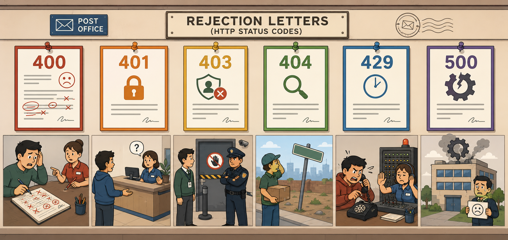
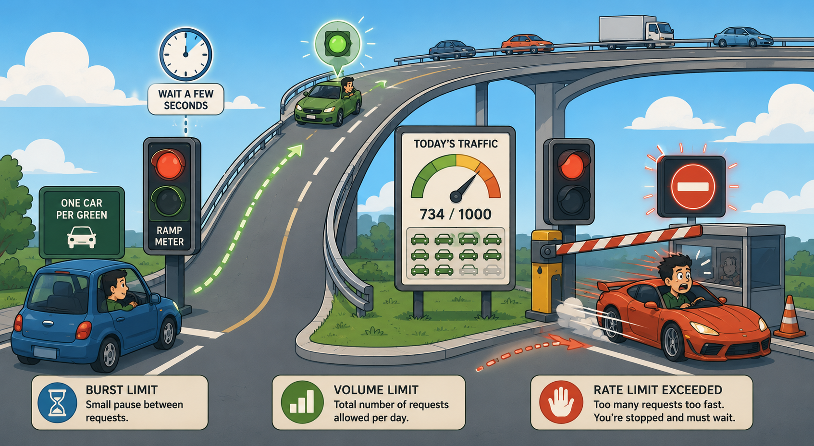
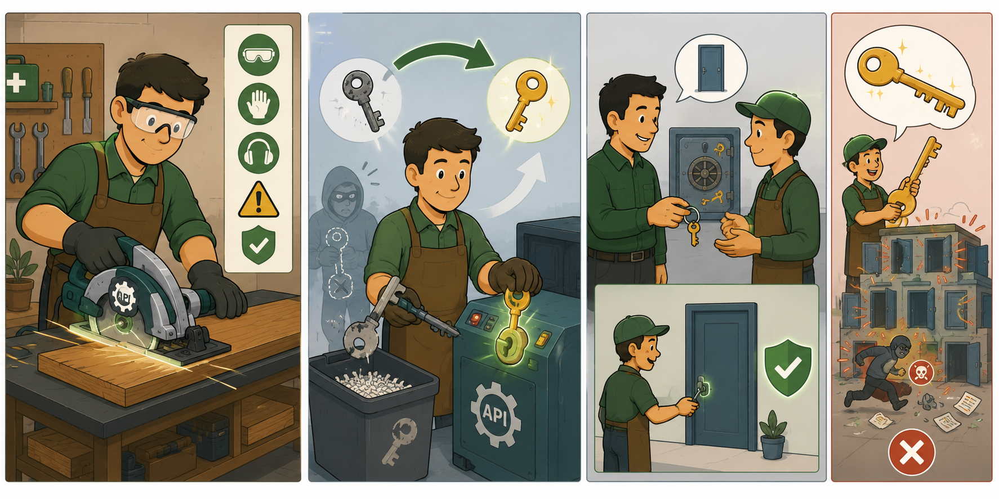

HTTP status codes, rate limiting, error code debugging, and best practices for secure, consistent, and scalable Zscaler API usage.
Good automation handles failures gracefully.
Knowing how to read error codes, handle rate limits, and follow security best practices turns a fragile script into a production-ready automation tool.
💭THINK FIRST · HTTP STATUS CODES
When your API call fails, the HTTP status code is your first diagnostic clue. A 4xx means your request was wrong. A 5xx means the server had a problem. A 2xx means success. But within each range, the specific code tells you exactly what went wrong — if you know what each one means.
You receive a 403 Forbidden. You know your API key is valid and your role has permissions. What other scenarios could cause a 403 — and which one often gets overlooked under deadline pressure?
A 409 means "edit conflict" — another admin saved a change simultaneously. What does this tell you about how Zscaler's backend handles concurrent modifications to the same configuration?
If you receive a 401 Unauthorized midway through a script that's been running for 90 minutes, what's the most likely cause — and how should a well-written script handle this automatically?
Q1 — MODEL ANSWER
Beyond a disabled key or insufficient role, two often-overlooked causes are a missing SKU subscription for the feature you're calling, and the ZIA Admin Portal being in maintenance mode during a scheduled upgrade (which blocks POST/PUT/DELETE specifically). Under deadline pressure the maintenance-window scenario is the silent killer — engineers assume "auth failure" and keep retrying credentials instead of checking the portal status banner. Always rule out maintenance mode and SKU entitlement before touching identity configuration.
Q2 — MODEL ANSWER
409 tells you Zscaler's backend uses optimistic concurrency rather than serialized locking — two admins can fetch the same config, edit it independently, and the first save wins while the second is rejected. This is a performance/UX trade-off: locking would prevent the conflict but would also block all concurrent edits across a large multi-admin tenant. The practical implication is that your script must treat a 409 as a normal, expected condition and implement retry-with-backoff (and ideally re-fetch the latest version before retrying) rather than treating it as a hard failure.
Q3 — MODEL ANSWER
The most likely cause is bearer-token expiry — Zscaler access tokens are time-limited, and a 90-minute run will typically outlast the token lifetime. A well-written script should not wait for the 401 to react: it should track the token issue time and pre-emptively refresh before expiry. As a safety net, it should also catch a 401 mid-execution, transparently re-authenticate, and retry the failed request once before surfacing the error to the user.
API RESPONSE CODES AND ERROR MESSAGES
HTTP Status Codes
The following HTTP status codes are returned by the Zscaler API to indicate the outcome of a request. Understanding these codes is the first step in diagnosing and resolving API issues.
API key disabled; role has no access permissions; missing SKU subscription; portal in maintenance mode during POST/PUT/DELETE
404
Resource Does Not Exist
Incorrect endpoint URL, resource ID doesn't exist
405
Method Not Allowed
HTTP method not supported for this resource endpoint
409
Edit Conflict
Another admin saving a configuration change simultaneously — retry after a short delay
415
Unsupported Media Type
Missing Content-Type: application/json header
429
Rate Limit Exceeded
Too many requests. Response includes Retry-After value
500
Unexpected Error
Internal server error — contact Zscaler Support if persistent
503
Service Temporarily Unavailable
Service is down for maintenance or overloaded
!
403 FORBIDDEN — KNOW THE REASONS
403 can occur for multiple reasons: the API key was disabled by your service provider; the user's role has no access permissions or functional scope; a required SKU subscription is missing; or API operations using POST, PUT, or DELETE are performed when the ZIA Admin Portal is in maintenance mode during a scheduled upgrade. Check each of these before escalating.
Analogy
HTTP status codes are like rejection letters with specific reasons. 400 = "Your application had errors — check the form." 401 = "You didn't include your ID — show us who you are." 403 = "We know who you are but you're not authorized here." 404 = "The address you wrote doesn't exist." 429 = "You've called us too many times — try again later." 500 = "We're having technical difficulties — it's not you, it's us."

📷 A1.png — add this image to the folder
Flat minimalist cartoon illustration of a wall of rejection letters used as an analogy for HTTP status codes. One wide composition arranged as a quirky 'post office wall' with six distinct framed letters pinned in a row, each with a unique vignette beneath it depicting why a request was rejected. Letter 400: an applicant looks at a smudged, sloppily-filled paper form with corrections, a clerk circling errors in red. Letter 401: a stranger at a reception desk without any ID card, the clerk politely asking 'who are you?' with empty hands gesturing. Letter 402-skip — proceed to 403: a confident person with a clearly visible ID badge being stopped by a guard at a restricted door with crossed arms ('you're not authorized here'). Letter 404: a delivery person with a package standing in front of an empty lot/vacant address with a tilted street sign that has no name. Letter 429: an impatient caller furiously dialing the same number on a phone over and over, a switchboard operator covering ears with a stop-hand gesture. Letter 500: the office building itself with smoke and a broken-gear icon coming out of the roof, an embarrassed worker holding a 'we're having issues, it's us!' apology sign. Each scene is small and self-contained. Clean geometric shapes, flat illustration style, bold outlines, soft lighting, simple cartoon characters, no text labels, educational infographic feel, modern tech-analogy aesthetic.
🧠
MENTAL NOTE
403 has 4 causes — memorize ALL four: (1) API key disabled by service provider; (2) User role has no access permissions or functional scope; (3) Missing SKU subscription; (4) Portal in maintenance mode during POST/PUT/DELETE. 409 = retry after short delay. 429 = read Retry-After header. 401 = token expired, re-authenticate.
📷 1.png will appear here once you add it to this folder
[Generate: flat amber decision tree — server icon at top with three branches: green "2xx Success" path leading to checkmark, amber "4xx Client Error" path leading to question mark with sub-labels for 401/403/404/429, red "5xx Server Error" path leading to warning triangle — clean minimalist, no text labels]
ASK A QUESTION
MY NOTES
💭THINK FIRST · RATE LIMITING
Rate limiting protects the API from abuse — but it also affects well-intentioned automation scripts that run too aggressively. Think about the engineering challenge: how do you write a script that's both fast enough to be useful and rate-limit-aware enough to not fail mid-execution?
GET has a rate limit of 4,000 req/hr but also 2 req/sec. If you fire 3 GET requests in one second, you hit the burst limit even though you're nowhere near the hourly limit. How should your script respond when it gets a 429 in this scenario?
DELETE is limited to 4 per hour. If you need to delete 100 resources, that's a 25-hour operation at that rate. How would you design a bulk deletion strategy that respects this limit?
The 429 response includes a Retry-After value. Why is it important to respect this value rather than just retrying immediately after receiving the error?
Q1 — MODEL ANSWER
Your script should read the Retry-After value from the 429 response body, sleep for that duration, then retry the exact failed request — and going forward, throttle itself to honour the 2 req/sec burst rule rather than firing as fast as possible. The right pattern is to inject a small time.sleep() between every GET (e.g. ~0.5s) so the burst limit is never tripped in the first place. Reacting to 429s works, but proactively pacing the script is the production-grade approach.
Q2 — MODEL ANSWER
If you truly need 100 deletes against a 4/hour ceiling, you have three real options: (1) schedule the work as a 25+ hour background job that paces 4 deletes per hour and persists progress so it survives restarts; (2) check if the resource type supports a batch/bulk delete endpoint that counts as a single request; or (3) restructure the operation — for example, disable or de-reference the resources via PUT (medium weight, 400/hr) instead of deleting. The mental model is: DELETE is the most expensive verb in the rate-limit system, so design around it whenever possible.
Q3 — MODEL ANSWER
Retry-After is the server telling you exactly when the bucket will have refilled — retrying earlier guarantees another 429 and burns one of your remaining quota slots on a doomed request. Hammering the endpoint also looks like abuse to upstream protections and can lead to longer cooldowns or temporary blocking. Respecting Retry-After is both more efficient (one successful retry instead of many failures) and a signal of well-behaved client design.
RATE LIMITING
Rate Limiting in Zscaler APIs
Every endpoint and action has two rate limit types. These limits throttle the number of API calls you can make. Every endpoint has a weight, and every weight has a default rate limit, but some endpoints have exceptions.
Two-tier rate limiting: 1. A lower bound limit that protects against high bursts of requests over a short period of time.
2. An upper bound limit that protects against a high volume of requests over a long period of time.
Weight
Typical Assignment
Req/sec
Req/min
Req/hr
Heavy
DELETE
—
1
4
Medium
POST, PUT
1
—
400
Light
GET
2
—
4,000
Handling Rate Limit Errors
As a best practice, after each call to an endpoint, your script should include a wait (or sleep) period. For example in Python, you would use the time.sleep() function.
When the rate limit is exceeded, a 429 HTTP error message is returned with a Retry-After response in the body:
Use batch requests for bulk operations to minimise the number of individual API calls. Monitor OneAPI usage via the Postman REST API client to avoid exceeding rate limits. Build retry logic into scripts that respects the Retry-After header value when a 429 is received.
Analogy
Rate limiting is like a highway on-ramp with a metered traffic light. The light only lets one car through every few seconds (burst limit) even if the highway is empty. And there's a daily maximum of vehicles that can enter regardless of how spread out they are (volume limit). If you try to rush through when the light is red, you get stopped (429) and must wait. The best drivers time their approach to the ramp — they don't race to it and brake hard.

📷 A2.png — add this image to the folder
Flat minimalist cartoon illustration of a metered highway on-ramp used as an analogy for API rate limiting. One wide horizontal scene with three integrated moments. Center: a curved highway on-ramp leading up onto a multi-lane freeway in the sky; at the base of the ramp is a tall metered traffic light system (the classic 'one car per green' ramp meter) with a glowing red/green signal panel. Foreground left: a calm patient driver in a small cartoon car waits politely at the red light; a small clock icon hovers over the meter showing the few-second pause (burst limit). Mid-ground: a daily-counter sign beside the ramp shows a tally of vehicles that have entered today out of a maximum quota (volume limit), illustrated with a friendly meter dial and a stack of car icons. Foreground right: a reckless impatient driver in a sports car blasts through the red light at full speed and is immediately stopped by an enforcement arm with a flashing '429' style stop sign popping up (use a clear no-entry symbol rather than text); the driver looks shocked and is forced to wait in a small penalty box. In the background, a sage 'best driver' calmly timing their approach with a wristwatch is shown gliding smoothly through every green. Clean geometric shapes, flat illustration style, bold outlines, soft lighting, simple cartoon characters, no text labels, educational infographic feel, modern tech-analogy aesthetic.
🧠
MENTAL NOTE
Rate limits by weight: Heavy (DELETE) = 1/min, 4/hr. Medium (POST/PUT) = 1/sec, 400/hr. Light (GET) = 2/sec, 4,000/hr. Best practice: add time.sleep() after EVERY call — don't wait for 429 to react. When you do get 429: read Retry-After from the response body, sleep that duration, then retry. Build this into every script from the start.
ASK A QUESTION
MY NOTES
💭THINK FIRST · BEST PRACTICES
Security best practices for APIs often feel obvious in theory but get skipped under deadline pressure. Think about which of these "obvious" practices you'd actually be tempted to shortcut — because that's exactly when attackers look for gaps.
"Never hardcode credentials in scripts" — but storing them in environment variables requires extra setup. What's the actual threat: if credentials are hardcoded in a private internal repo, who could realistically access them, and how?
"Always test in staging before production" — but what if you don't have a staging environment? What's the minimum viable testing strategy when a staging environment isn't available?
"Generate different Access Tokens for separate endpoints." Under what specific attack scenario does this actually protect you compared to using one universal super-admin token for everything?
Q1 — MODEL ANSWER
"Private" is rarely as private as it feels: anyone with repo access (current employees, contractors, ex-employees whose access wasn't revoked promptly, and anyone who forks/clones to a personal machine) can see the secret, and the credential is then preserved forever in git history even if you delete the line later. Repo backups, CI logs, and accidental promotion to a public mirror are also realistic exposure paths. The threat isn't "hacker breaks into GitHub" — it's the slow erosion of who has seen the credential over its lifetime, which is exactly what rotation and environment variables are designed to bound.
Q2 — MODEL ANSWER
When staging isn't available, build the safest possible production test: run a read-only dry run first (GET the resources you'd modify so you can confirm IDs and current state), then execute against a single low-impact resource and verify the result before fanning out. Wrap the change in a script that captures the pre-change state so you have a known-good rollback target. The minimum viable substitute for staging is "small blast radius + reversibility" — never a blind bulk operation.
Q3 — MODEL ANSWER
Separate tokens protect you under credential-leak scenarios: if one script's token is exposed (committed to a repo, captured in a log, exfiltrated from a CI runner), the attacker only gains the scope of that one token rather than full tenant control. It also makes revocation cheap and surgical — you rotate the leaked token without breaking every other integration. A single super-admin token converts any one leak into a full-tenant compromise, which is the worst-case blast radius.
BEST PRACTICES
API Best Practices
Following these best practices ensures your Zscaler API integrations are secure, consistent, and scalable.
01
Secure API Usage
Rotate API tokens using ZIdentity periodically to prevent unauthorised access
Always generate different Access Tokens for separate endpoints
Always validate and assign the specific API resources to the users — do not provide super admin access to everyone
Never share the Secret ID/JWT or Client ID to anyone
Always use HTTPS for secure communication
02
Maintaining Consistency
Always use Zscaler provided JSON templates for all Zscaler APIs for standardising configurations
Implement version control for all Zscaler API scripts
03
Enhancing Scalability
Use batch requests for bulk operations
Monitor OneAPI usage via Postman REST API client to avoid exceeding rate limits
04
Deployment Methodologies
Always test changes in staging before production
Use environment variables for sensitive information like OneAPI tokens using ZIdentity
★
NEVER DO THESE THINGS
Never share your Secret ID, JWT token, or Client ID with anyone — these are equivalent to passwords. Never use HTTP (always HTTPS). Never hardcode credentials in scripts — use environment variables. Never give super admin access when scoped access is sufficient. Never skip staging testing before pushing to production.
Analogy
API security best practices are like safe handling rules for a powerful tool — they feel unnecessary right up until the moment they prevent a catastrophe. "Always rotate tokens" = always assume a credential could be compromised. "Never give super admin when scoped access is enough" = never hand someone the master key when they only need to open one door. Rules matter most when you're in a hurry and feel like skipping them.

📷 A3.png — add this image to the folder
Flat minimalist cartoon illustration of safe handling rules for a powerful workshop tool used as an analogy for API security best practices. Wide horizontal composition split into three vignettes. Vignette 1 (Power tool safety mindset): a friendly cartoon woodworker in safety goggles and gloves carefully operating a glowing power saw labeled with a small API gear icon; a safety poster on the wall lists rules with simple icons (no text), and there's a friendly look of 'these rules matter.' Vignette 2 (Always rotate tokens): a worker swaps an old worn-down key into a 'shredder bin' while inserting a fresh shiny key into a tool's keyed safety lock; circular arrows show a rotation cycle. A small ghost-hooded figure in the background tries to steal the discarded key but it's already invalid (faded out). Vignette 3 (Least privilege keys): a careful supervisor hands a worker a single small key ring with just one key (for one door) instead of a giant glittering 'master key' that opens every door of an entire building; the master key is shown locked away in a vault. A subtle 'catastrophe averted' moment: a separate side panel shows what would have happened with the master key — many doors flung open with chaos icons. Clean geometric shapes, flat illustration style, bold outlines, soft lighting, simple cartoon characters, no text labels, educational infographic feel, modern tech-analogy aesthetic.
🧠
MENTAL NOTE
4 best practice categories: (1) Secure Usage — rotate tokens, separate tokens per endpoint, validate/assign specific resources, NEVER share Secret ID/JWT/Client ID, always HTTPS; (2) Consistency — use Zscaler JSON templates, implement version control; (3) Scalability — batch requests, monitor usage via Postman; (4) Deployment — staging before production, environment variables for all sensitive info.
ASK A QUESTION
MY NOTES
💭THINK FIRST · DEBUGGING ERRORS
Systematic debugging is a disciplined skill. The temptation is to randomly try changes until something works. The productive approach is to gather evidence first, form a hypothesis based on what the error code tells you, then test exactly one thing at a time. Think through the 5-step process before reading it.
Your API call returns a 400. Your JSON looks correct when you read it. What else — beyond the JSON structure itself — could cause a 400 that isn't obvious from a quick visual scan?
Your script was working yesterday and returns a 401 today with zero code changes. List three possible explanations in order of likelihood, from most common to least.
You're debugging a 403 and you've confirmed the API key is active and the user role has permissions. What are your next three checks — in the order you'd perform them?
Q1 — MODEL ANSWER
The JSON can look right but still trip a 400 due to invisible issues: trailing whitespace or non-printing characters, smart quotes pasted from a doc instead of straight quotes, wrong data types (sending a number as a string or vice versa), missing required fields the docs specify, or a missing/incorrect Content-Type header. Method-endpoint mismatch (POSTing to a GET-only path) and query-parameter formatting can also surface as 400. Always re-validate against the API reference and run the body through a JSON linter before assuming the schema is fine.
Q2 — MODEL ANSWER
In order of likelihood: (1) the bearer token has expired — by far the most common cause, since tokens are time-limited and yesterday's token simply isn't valid today; (2) the API client/credential was rotated, disabled, or had its scope reduced by an admin; (3) an upstream change such as a ZIdentity configuration update, role change, or tenant migration that invalidated the existing session. Check token freshness first because it's both the most common and the fastest to remediate.
Q3 — MODEL ANSWER
First, check SKU/entitlement — the feature you're calling may require a subscription the tenant doesn't have, which presents as 403 even when auth is correct. Second, check whether the ZIA Admin Portal is in maintenance mode during a scheduled upgrade, since POST/PUT/DELETE are blocked during that window. Third, verify functional scope on the API client itself — the role may have permissions in the UI but the API client/token may be scoped to a narrower set of resources that excludes the endpoint you're calling.
DEBUGGING ERROR CODES
Systematic Error Debugging
When you receive an error code, work through this systematic checklist before escalating to Zscaler Support.
1
Check for configuration errors: Look for typos, whitespaces, or invalid JSON formatting in your request body. Invalid JSON is a common cause of 400 errors.
2
Verify all request elements against API documentation:
› Request headers — is Authorization: Bearer {token} included? Is Content-Type: application/json set?
› Parameters in the request body — all required fields present? Correct data types?
› Query parameters — correct format and values?
› HTTP method — is GET/POST/PUT/DELETE correct for this endpoint?
3
Check authentication state: Is the token expired (401)? Does the API client have the correct scope/resource access for this endpoint (403)?
4
For 429 errors: Implement the Retry-After delay. Add time.sleep() between requests. Consider batch operations instead of sequential individual calls.
5
For 409 conflicts: Another admin is making simultaneous changes. Retry the request after a short delay. Add retry logic with exponential backoff to your scripts.
Token Expiry Tip: Access tokens are time-sensitive. Build token refresh logic into your scripts so they automatically re-authenticate before the token expires rather than failing mid-execution with a 401 error.
Analogy
Debugging API errors is like diagnosing a car that won't start. Step 1: check the obvious first (is there fuel? = is the JSON valid?). Step 2: read the error carefully (what does the dashboard light actually say? = what does the status code mean precisely?). Step 3: check authentication (is the key in the ignition? = is the Bearer token present and unexpired?). Don't replace the engine before you've checked the fuel gauge.
📷 A4.png — add this image to the folder
Flat minimalist cartoon illustration of a friendly mechanic diagnosing a car that won't start, used as an analogy for debugging API errors. Three sequential scenes arranged left-to-right in one wide composition. Scene 1 (Check fuel = Valid JSON): a smiling mechanic kneels beside a small cartoon car and lifts the fuel cap; a transparent fuel-gauge bubble floats above showing a tiny droplet icon and curly-brace JSON symbols inside the tank, indicating 'is the format right?' Scene 2 (Read the dashboard = Read the status code): the mechanic sits in the driver's seat looking carefully at the dashboard, which displays a clear illuminated warning light icon — a magnifying glass hovers over the warning to emphasize reading it precisely (no random guessing); little error-code numbers float as glowing icons. Scene 3 (Check the key = Check auth token): the mechanic holds up a glowing car key with a tiny clock icon (indicating expiration) and tries it in the ignition — the dashboard lights up green when the key is valid and unexpired. In the corner: a comic-style 'don't do this!' panel showing an over-eager mechanic dramatically pulling out an entire engine before checking anything, with a small red X — a cautionary visual. Clean geometric shapes, flat illustration style, bold outlines, soft lighting, simple cartoon characters, no text labels, educational infographic feel, modern tech-analogy aesthetic.
🧠
MENTAL NOTE
5-step debug process: (1) Check JSON for typos/whitespace/formatting — invalid JSON → 400; (2) Verify headers (Authorization: Bearer + Content-Type: application/json), body fields, query params, HTTP method against docs; (3) Check auth state — token expired=401, wrong scope=403; (4) For 429: implement Retry-After + time.sleep(); (5) For 409: retry with exponential backoff. Always build auto token-refresh logic into production scripts.
📷 2.png will appear here once you add it to this folder
[Generate: flat amber 5-step vertical flow chart — 5 rounded rectangles connected by downward arrows: Step 1 = magnifying glass on code (JSON check), Step 2 = checklist with header/method/params (request verification), Step 3 = key and lock (authentication check), Step 4 = 429 warning with clock/timer (rate limit retry), Step 5 = circular refresh arrow (exponential backoff retry) — minimalist, no text labels]